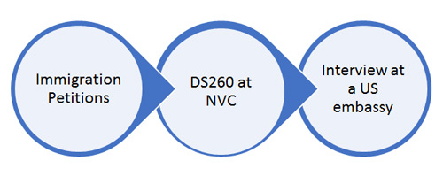

If you are already married to a US citizen, but you are
currently outside the U.S., you can apply for an Immigrant visa
at a US embassy in the country where you are residing or
domiciled now.
Procedure for visa application at an US embassy abroad
(Consular Processing)

Step 1) A Petitioner: an U.S Citizen spouse / Relative
Your US citizen spouse must file an Immigration Petition for you
with United State Citizenship and Immigration Services in the
U.S. Once it is approved, your case will be transferred to
National Visa Center and eventually to the US embassy in the
country where you are residing or domiciled.
Step 2) National Visa Center
Once USCIS approves the Immigration Petition filed on behalf of
you, they transfer your files to the National Visa Center for
the next step. You should submit DS260 to National Visa Center
and other supporting documents such as your passport, birth
certificate, affidavit of financial support, police certificate
and others requested.
Step 3) Interview at an US embassy – Beneficiaries/Visa
applicants
When your DS260 application is completed, National Visa Center
send you a notification for interview at US embassy in the
country where you indicated on your application to reside. The
notification includes the interview date, time and location.
Once you received the notification, you must register your visa
interview online with the specific US embassy.
Your should bring Copy of your DS 260 Submit Confirmation Sheet,
Interview Notification mail (or e-mail), medical examination
result, and other documents specified to bring with you in the
notification. If you successfully complete the interview, they
will issue you an Immigrant Visa. The visa usually is valid for
six months from the date of interview.
If your visa is refused, please refer to Inadmissibility and
Waiver.
(1) Korean Nationals
Koreans must obtain a Criminal (Investigation) Records Check
Reply ‘For permission of foreign country immigration and stay’
“Bomjoi-Soosakyongryeok Hoiboseo: Waekuk Yipkuk-Chaeryu
Heogayong (범죄수사경력 회보서: 외국입국체류허가용).” These certificates can be obtained at any police station. A
passport or national ID card will be required for identification
purposes. No fee is charged, and the certificates are issued
immediately. Application forms can be obtained at the police
station.
(2) Foreign Nationals in Korea
For foreign nationals, Criminal Records Certificate
“Bomjoikyungryeokjeungmyungseo
(범죄경력증명서)” must be obtained. This
certificate can be obtained at any police station with a Foreign
Affairs Division (외사과). Your passport and
one photo are required; no fee is charged. Applications take
approximately one week to process, and you may pick up the
certificate at the same police station. Application forms can be
obtained at the police station.
The Korean police certificates are issued both in Korean and
English. If you have ever been arrested in any jurisdiction,
court records with English translations should also be
submitted.
(3) Chinese Nationals
ALL APPLICANTS OVER 16 YEARS OF AGE MUST PROVIDE: A police
certificate issued within the last 24 months (with a certified
English translation) from your country/territory of nationality
that covers the ENTIRE TIME you have lived in that country since
age 16.
Chinese local notary offices are the only authority that can
issue Chinese Police Certificates.
Do you currently reside outside the country of your nationality?
AND have you resided there for longer than six (6) months? If
yes to both, please also provide a police certificate issued
within the last 24 months (with a certified English translation)
from that country.
Have you ever lived anywhere else outside your country of
nationality for more than one year? If yes, please also provide
a police certificate (with a certified English translation) from
that country which covers the entire period of residency.
Are you a K-1 visa applicant? If yes, provide a police
certificate (with a certified English translation) that covers
the entire period of residency from all countries you have
resided in for six (6) months or longer since age 16.
Korea
All immigrant visa applicants, regardless of age, require a
medical examination prior to the issuance of a visa. Only a
physician accredited by the U.S. Embassy can perform this exam.
Approved physicians
| Name of Hospital |
Contact |
Online Reservation |
|
Gangnam Severance Hospital (Visa Medical Center)
|
Dogok-ro 235, Gangnam-gu, Seoul (Visa Medical Center,
1st floor)
Tel: 02-2019-1209
|
gs.iseverance.com |
| Saint Mary’s Hospital |
63 Ro 10, Youngdeungpo-Gu, Seoul
Tel: 02-3779-1521
|
cmcsungmo.or.kr |
| Seoul National University Hospital |
Daehak-Ro 101, Jongno-Gu, Seoul
Tel: 02-2072-4918
|
N/A |
| Yonsei Severance Hospital |
Yonsei-Ro 50-1, Seodaemun-Gu, Seoul
Tel: 1599-1004
|
sev.iseverance.com |
| Haeundae Paik Hospital |
Haeundae-Ro 875, Haeundae-Gu, Pusan
Tel: 051-797-0369
|
N/A |
Items to bring for medical examination
- Your visa interview letter
- Your passport,
-
Five (5) recently taken passport-sized color photographs,
- A copy of your immunization records; and,
-
Your current email, address and zip code; intended U.S.
address with zip code; and prior countries of residence.
Any medical examination fees, including x-ray and blood test
fees, must be paid at the hospital. The range of medical
examination fees at panel physician hospital is as follows:
310,000 – 397,091 for age of 15 or older; 160,000 – 345,000 for
ages between 2 and 14; and, 135,000 – 220,000 for age 1 or
younger depending on the procedures or tests determined to be
necessary by the panel physician. Vaccination fees are
additional.
China
Approved physicians
| Location |
Name of Hospital and Contact |
Fee |
| BEIJING |
Beijing International Travel Healthcare Center
20 Hepingli North Street, Dongcheng Dist., Beijing
Tel: (010) 82005029 / 82003383
Website:
beijingithc.org.cn
|
Basic fee: RMB1248 for adult, RMB1445 for child aged 2 to
14, RMB705 for child aged under 2
|
| GUANGZHOU |
Health Care Center of Guangzhou International Travel
4F, 5/F East Tower, Poly Bld, No. 59 Huali Rd,
Zhujiang New Town, Guangzhou
Tel: (020) 81219500 / 8129513
Website:
???
|
Basic fee: RMB1300 for adult, RMB1500 for child aged 2 to
14, RMB700 for child aged under 2
|
| FUJIAN |
Fujian Provincial Hospital (South Branch)
No. 516 Jinrong South Road, Fuzhou, Fujian
Tel: (0591) 88619601 / 88619602
Website:
cgtj.fjsl.com.cn
|
Basic fee: RMB1400 for adult, RMB1500 for child aged 2 to
14, RMB900 for child aged under 2
|
| SHANGHAI |
Shanghai International Travel Medical Center
|
Basic fee: RMB1300 for adult, RMB1500 for child aged 2 to
14, RMB900 for child aged under 2
|
Visa Interview and Refusal of Visa
After interview for immigrant visa or K visas and your
application for the visas were refused for reasons, you will be
given a Notice of Rejection by the interviewing consular
officer. The notice explains why your application was refused
and how to further proceed with the application.
Inadmissibility under Immigration and Naturalization Act
|
Code
|
Reason for Refusal |
| INA §221(g) |
Did not fully complete the visa application and/or provide
all required supporting documents
|
| INA §214(b) |
Did not establish eligibility for the visa category being
applied for or overcoming the presumption of being an
intending immigrant
|
| INA § 212(a)(2)(A)(i)(I) |
Was convicted of a crime involving moral turpitude;
-
A crime involving moral turpitude (other than purely
political offense).
-
A controlled substance violation according to the laws
and regulations of any country related to a single
offense of simple possession of 30 grams or less of
marijuana.
-
Two or more convictions, other than purely political
ones, for which you received sentences of confinement
amounting to 5 years or more.
-
Prostitution, including having procured others for
prostitution or having received the proceeds of
prostitution.
-
Unlawful commercialized vice whether or not related to
prostitution.
-
Serious criminal activity but you asserted immunity
from prosecution.
|
| INA § 212(a)(2)(A)(i)(II) |
Was convicted of a drug violation
No waiver is available expect for possession of 30g of
Marijuana for own use.
|
| INA § 212(a)(2)(B) |
Did not provide an adequate affidavit of support when one
was required; therefore denied under public charge
|
| INA §212(a)(6)(C)(i) |
Misrepresented a material fact or committed fraud to
attempt to receive a visa
|
| INA §212(a)(9)(B)(i) |
Previously remained longer than authorized in the United
States
|
Waiver of Inadmissibility
| Code |
Type of Waiver |
Standards |
| INA212(g)(1) |
Waiver of Communicable Disease |
- The spouse, parent, unmarried son or daughter, or
minor unmarried lawfully adopted child of
- A U.S. citizen; or
-
An alien lawfully admitted for permanent residence; or
- An alien who has been issued an immigrant visa
- A self petitioner under the Violence Against Women Act
(VA WA)
- The fiance(e) of a U.S. citizen or the fiance(e)’s
child.
|
| INA 212 (d)(3) |
Waiver of inadmissibility of nonimmigrant visa
|
BIA’s standards for waiver:
- The risk of harm in admitting the applicant;
-
The seriousness of the acts that caused the
inadmissibility; and,
-
The importance of the applicant’s reason for seeking
entry.
Matter of Hranka, 16 I&N Dec.491(BIA1978) “the
applicant’s reason’s for entering the US need to be
compelling”
Reference material: FAM 40.301 N3. 22CFR40.301
|
| INA212(a)(9)(B) |
Waiver of Unlawful Presence longer than 6 months
INA §212(a)(9)(B)(i)
|
Extreme Hardship Waiver
-
You have a U.S. citizen or lawful permanent resident
spouse or parent, or a U.S. citizen fiance(e) who
petitioned for your K visa, who would experience
extreme hardship if you were denied admission, and
-
The seriousness of the acts that caused the
inadmissibility; and,
-
The importance of the applicant’s reason for seeking
entry.
Matter of Hranka, 16 I&N Dec.491(BIA1978) “the
applicant’s reason’s for entering the US need to be
compelling”
Reference material: FAM 40.301 N3. 22CFR40.301
|